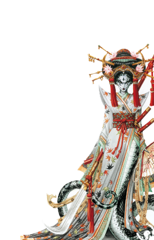

Святилище
Наги – человекообразные рептилии, приверженцы мистической и военно-феодальной культуры. Они одинаково свободно чувствуют себя и земле, и в воде, хотя в воде передвигаются гораздо быстрее. Полагая свое существование в Асхане мимолетным и иллюзорным, они стремятся к совершенству, как в поведении, так и в своих умениях. Идеалы чистоты, простоты и гармонии находят отражение в их магии, способах ведения боя и жизненной философии.
Другие имена: наги, дракониды, люди-змеи.
Основные цвета: нефритово-зеленый, бирюзовый
Страна/Королевство: Хаcима
Столица: Нария, Лотос-С-Восемью-Лепестками
Религия
Наги поклоняются Шалассе, дракону воды во всех ее проявлениях: океанам, озерам, ручьям, источникам, дождю, туману, снегу, льду, даже крови и слезам.
Магия
Наги – мастера «тихой» магии воды, что делает тело подвижным, а разум – послушным. Они привыкли полагаться на мудрость и учение. Их магия отличается длительностью действия и сила ее постепенно нарастает, становясь разрушительной. Боевые заклинания наносят урон не меньше, чем цунами и ураганы; благословения позволяют войскам неустанно атаковать противника; проклятья же замедляют врага и дезориентируют его.